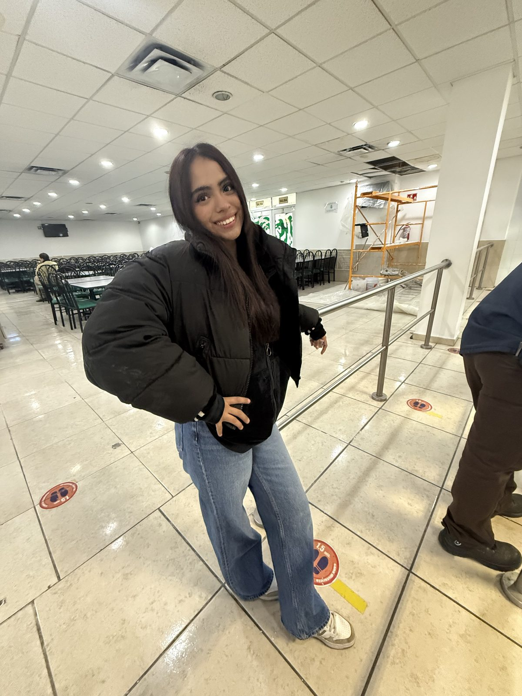
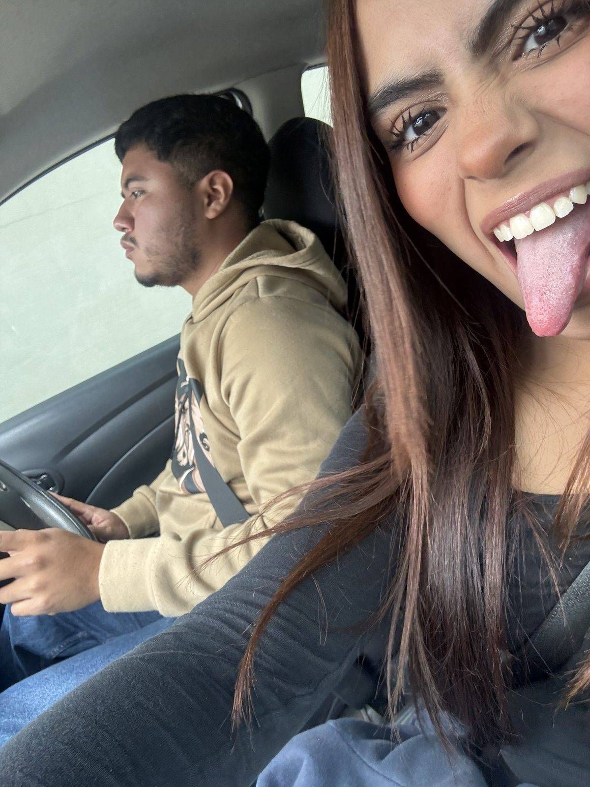
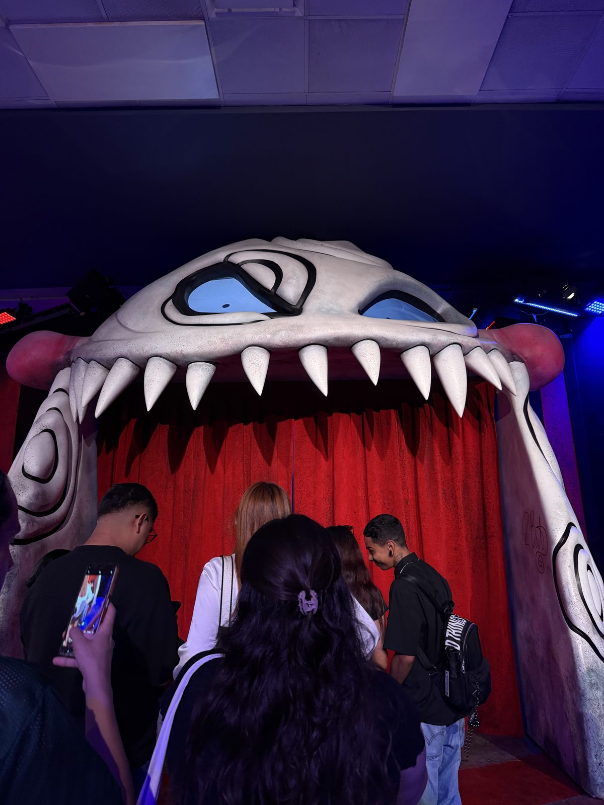
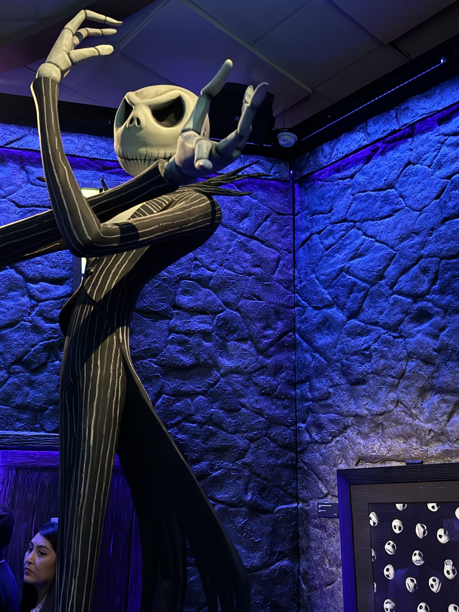
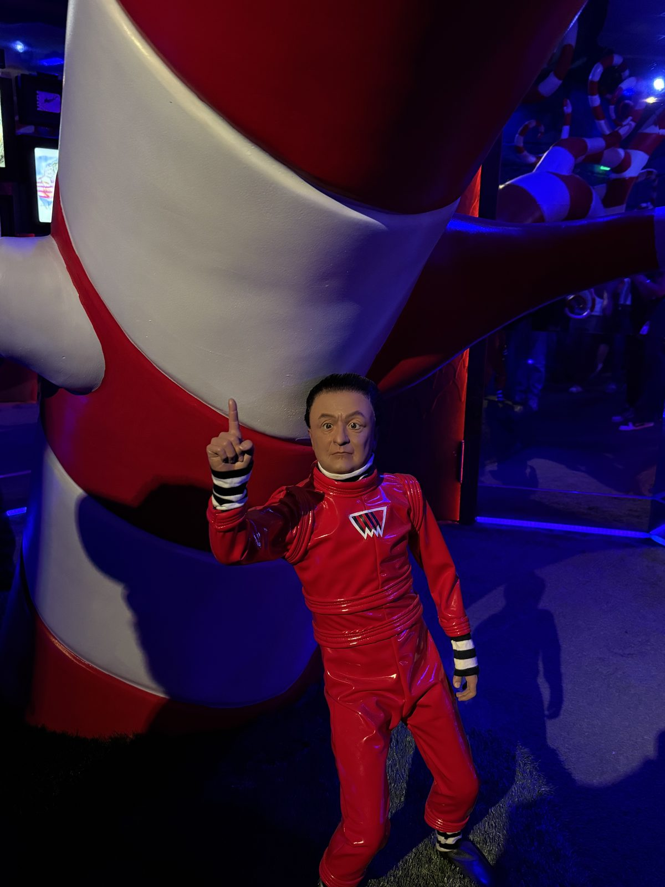
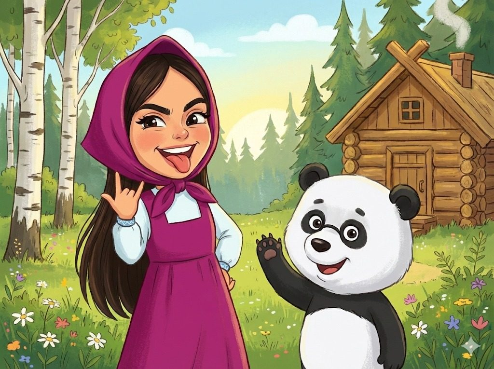

Hay personas que terminan formando parte de tus mejores recuerdos sin que te des cuenta.
Y creo que tú eres una de esas personas, no porque haya pasado algo extraordinario todo el tiempo, sino por todas esas pequeñas cosas que terminaron haciendo que compartir momentos contigo se sintiera tan natural.


Todo empezó con cosas que parecían cualquier cosa.
Una conversación que se suponía que iba a durar cinco minutos y terminaba quién sabe cuánto después. Y así, poco a poco, se fueron juntando un montón de momentos que ahora recuerdo con muchísimo cariño. Desde las cosas más simples hasta esas conversaciones que solamente nosotros sabemos por qué terminaron siendo tan buenas.
Y creo que eso es lo bonito de los recuerdos que tenemos. Que ninguno necesitó ser planeado para terminar significando algo.
Y luego están esas historias
que algún día vamos a recordar y decir: "¿te acuerdas?"




Como cuando fuimos al laberinto y terminamos en San Pedro y después en galerías, jaja.
Todas las veces que te decía "¿vamos a comer o qué?"
Las tonterías que dijimos y todos los reels que nos mandábamos.
Los momentos en los que probablemente ninguno de los dos estaba pensando que algún día íbamos a recordar ese día con cariño.
Y no sé por qué, pero me gusta pensar que esos son justamente los recuerdos que más terminan quedándose. No los grandes acontecimientos. Sino esos días que simplemente pasaron y que después se convierten en una pequeña parte de una etapa que uno no sabía que algún día iba a extrañar.
También están todos esos mensajes, las bromas, las veces que me pediste ayuda con algo, las veces que terminamos hablando de cualquier cosa y todas esas pequeñas situaciones que hicieron que poco a poco nos tuviéramos tanta confianza. Y aunque algunas parezcan cosas pequeñas, para mí no lo son. Porque al final, son esas pequeñas cosas las que hacen que una persona termine siendo importante.
Angela,
Ahora sí, hablando de lo que realmente quería decirte.
Sé que tienes tu examen y probablemente ya traes en la cabeza mil cosas: que si estudiaste suficiente, que si te va a tocar algo difícil, que si te vas a acordar de todo, que si una pregunta te va a sacar de onda.
Y probablemente hasta estés pensando demasiado en cosas que todavía ni pasan. Por eso quería recordarte algo antes de que llegue ese momento:
Confío en ti.
Y no te lo digo solamente porque quiera echarte porras antes del examen. Te lo digo porque de verdad lo creo.
He visto cómo eres cuando tienes algo que hacer. He visto cómo te estresas, cómo te preocupas, cómo dices que ya no puedes y aun así sigues. Y también he visto cómo muchas veces terminas sacando las cosas adelante aunque al principio pienses que no vas a poder.
Por eso no tengo dudas de que vas a hacer tu mejor esfuerzo. Tal vez haya preguntas que no recuerdes inmediatamente. Tal vez salgas pensando que algunas cosas pudieron salir mejor. Pero nada de eso cambia que llegaste hasta ahí después de todo lo que has hecho.
Así que quiero que entres tranquila. Lee bien cada pregunta. No te desesperes si algo no sale a la primera. Confía en lo que estudiaste. Y sobre todo, confía en ti.
Porque si alguien ha dudado de ti durante todo este tiempo, muchas veces has sido tú misma. Yo no. Yo siempre he pensado que puedes. Y espero que esta vez tú también puedas pensar lo mismo.
Sé que vas a poder con esto. Y cuando termines, independientemente de cómo sientas que te fue, quiero que estés orgullosa de ti por haberlo intentado y por haber llegado hasta aquí.
No quiero que un examen te haga olvidar todo lo que has hecho antes. Una calificación es solamente una calificación. Lo importante es que hiciste tu parte.
Y si salió bien, quiero que lo celebres muchísimo. Y si por alguna razón no salió como querías, tampoco significa que se acabó el mundo. Se aprende, se vuelve a intentar y se sigue. Porque al final, un examen nunca va a definir todo lo que eres capaz de hacer.
Y hablando de eso, también quería agradecerte. Por todos esos momentos que hemos compartido. Por las veces que hemos terminado riéndonos de cualquier cosa. Por las conversaciones que probablemente empezaron sin ningún sentido y terminaron hablando de absolutamente todo.
Por las veces que confiaste en mí. Por las veces que me buscaste para pedir ayuda. Por todas esas pequeñas cosas que quizá para ti fueron normales, pero que yo terminé guardando con muchísimo cariño.
Y obviamente por todas esas historias que algún día vamos a volver a contar. Porque si algo me gusta de todo lo que hemos vivido, es que tenemos un montón de pequeños recuerdos que solamente nosotros entendemos. Y espero que todavía nos queden muchísimos más.
No sé qué vaya a pasar después ni cómo cambien las cosas con el tiempo. Pero sí sé que me da mucho gusto haberte conocido. Y que siempre voy a querer verte bien.
Así que antes de que llegue el examen solamente quería decirte:
Muchísima suerte!!!!!
Confío en ti. Sé que puedes. Y pase lo que pase, aquí voy a estar echándote porras.
Ahora solo quiero que estés tranquila y que confíes en todo lo que has estudiado. Haz tu examen con calma, lee bien cada pregunta y no dejes que los nervios te hagan dudar de ti.
Y pase lo que pase, quiero que sepas que desde antes de que lo presentes yo ya estoy orgulloso de ti, y sé que vas a dar todo lo que puedas.
Y si llegaste hasta aquí...
Gracias por existir!!!! :)
Solo quería que supieras que creo en ti más de lo que probablemente te imaginas, y no necesitas demostrarme nada. No necesitas sacar una calificación perfecta para que yo piense que eres capaz. Solamente haz lo que sabes hacer.
Confía en todo lo que has aprendido y no dejes que los nervios te hagan olvidar quién eres.
Y cuando todo termine, espero que puedas mirar hacia atrás y darte cuenta de que sí pudiste. Porque yo ya lo sé.
Ahora solamente falta que tú también confíes un poquito más en ti misma.
Te agradezco mucho por todo y te juro que cada día doy gracias por haberte conocido, porque eres alguien única. Te mando un abrazo...